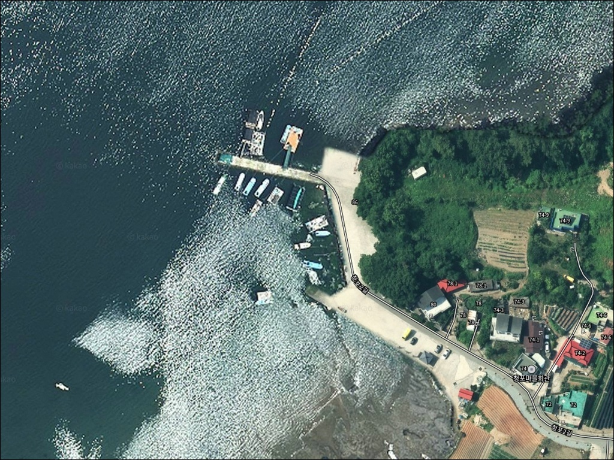
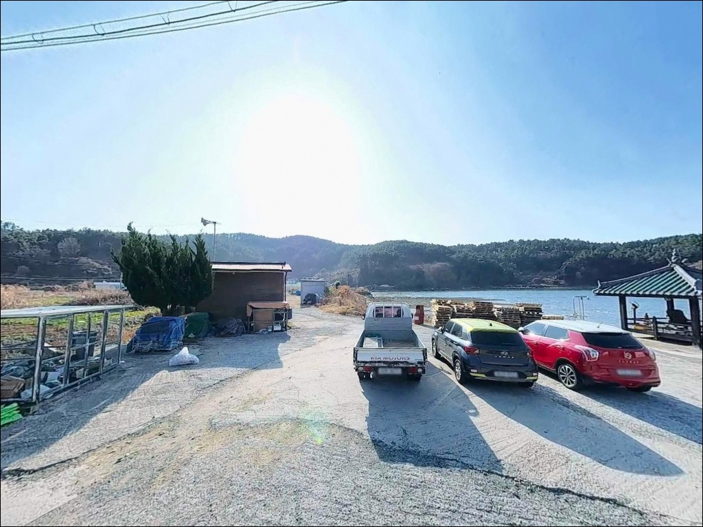
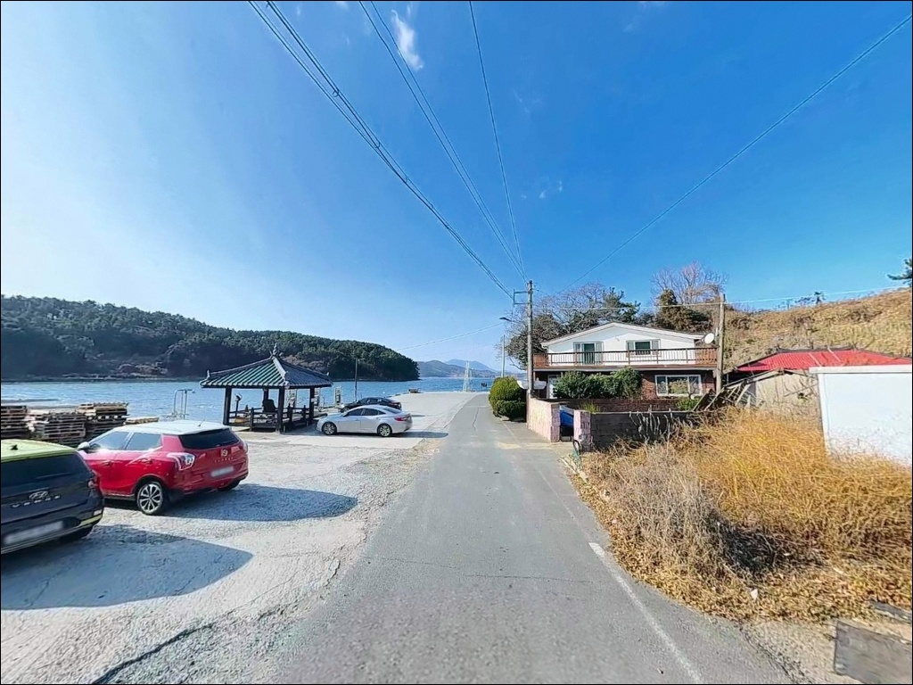
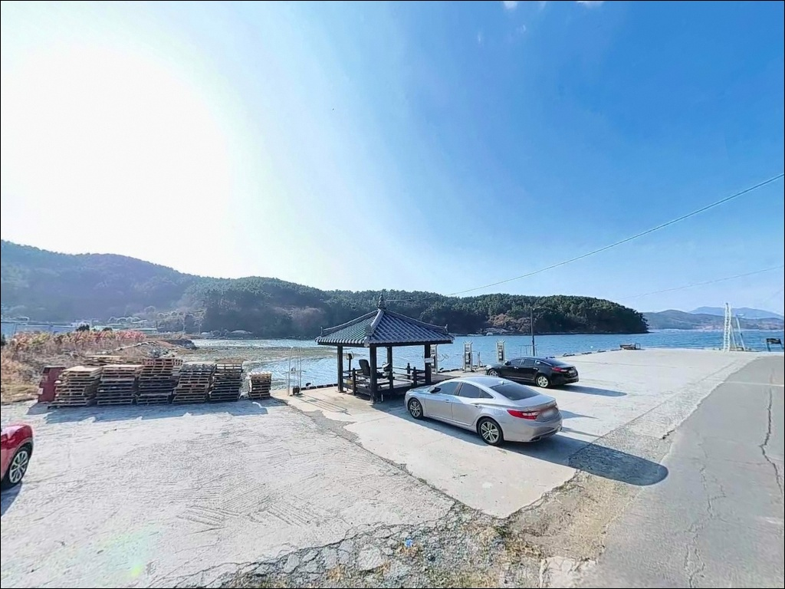
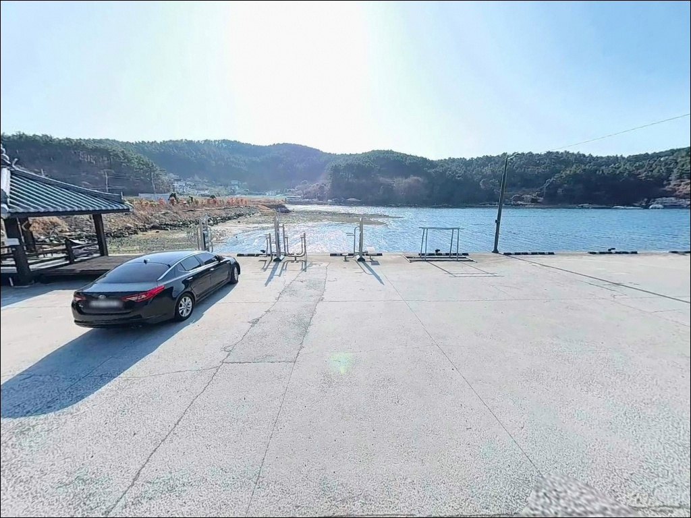
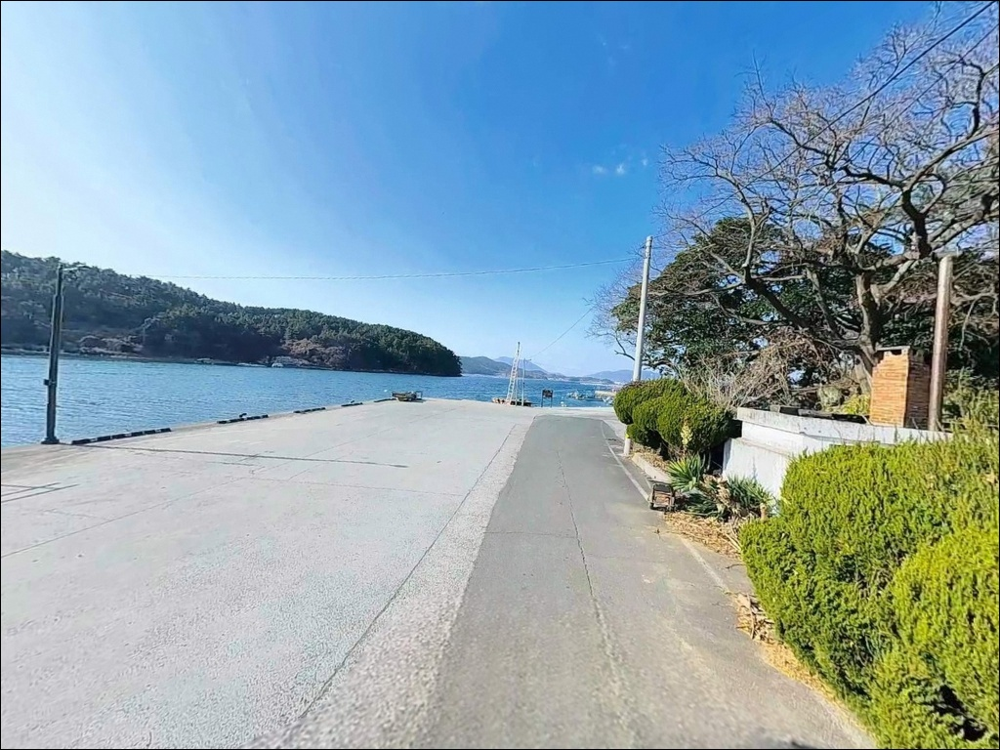
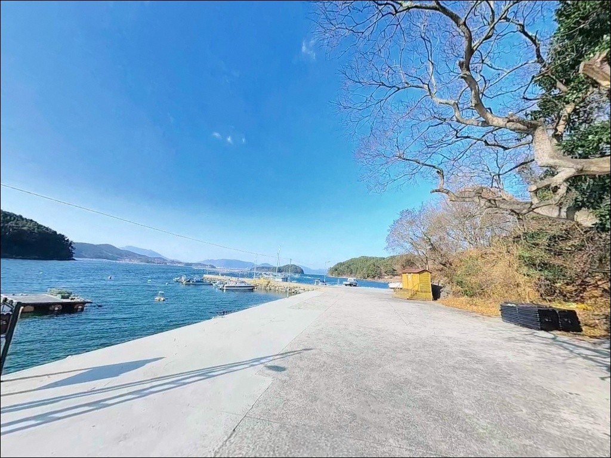
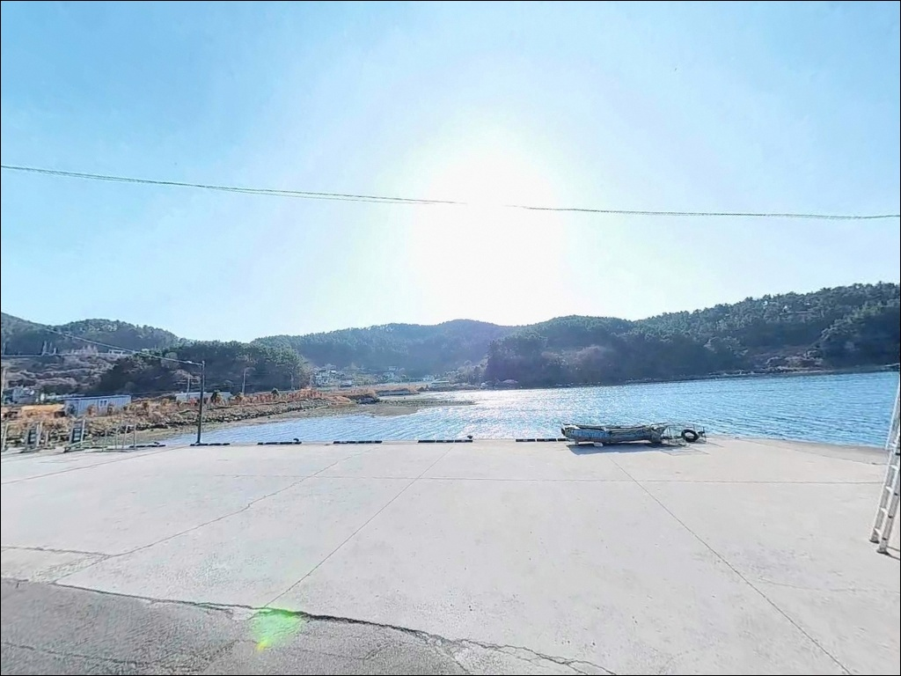
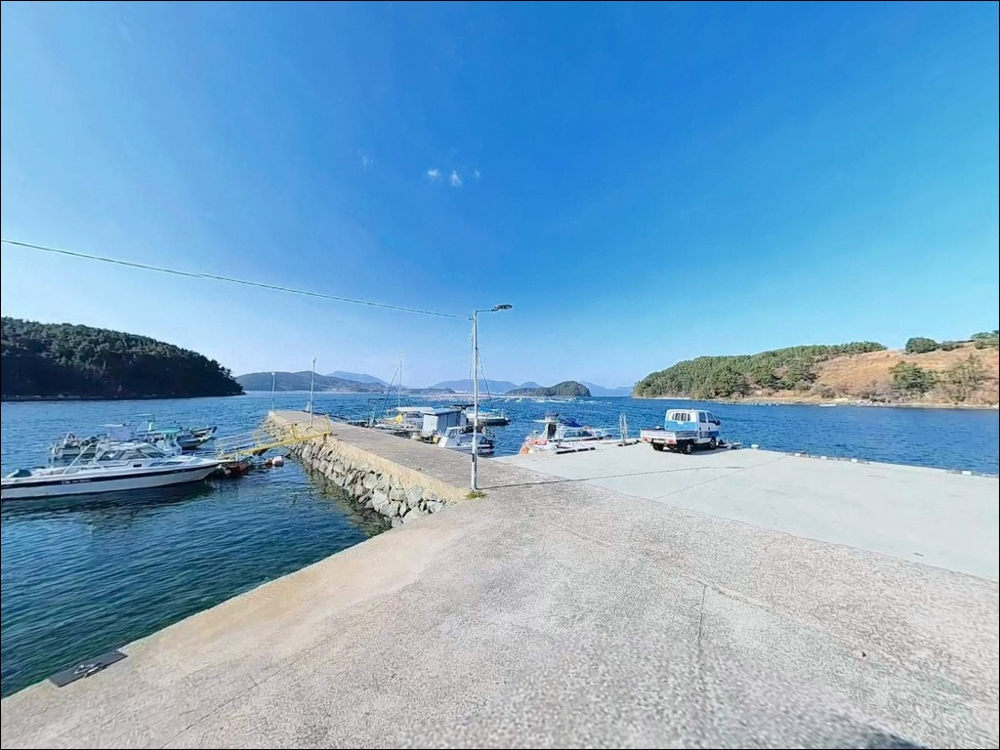

간조 때 채비 안 닿던 청곡리선착장, 들물 만조에 살아난 방파제 끝단 입질


포인트 안내
청곡리선착장
경남 거제시 사등면 청곡리 602-1
간조 전후에 맞춰 방파제 끝단에 자리를 잡으면
수심이 내려간 상태에서 채비가 닿지 않는 구간이 생깁니다.
청곡리선착장은 내항과 외항 사이 수심 차이가 크고,
들물 전후를 기준으로 삼아야
방파제 끝단 외항 쪽을 제대로 노릴 수 있습니다.
거제시 사등면 서쪽 해안에 자리한 청곡리선착장은
북측과 남측 두 개의 방파제로 구성된
규모 있는 선착장 포인트입니다.
사니질 바닥으로 밑걸림이 적고,
외항 쪽 수심이 급변하는 지점에서
원투낚시와 에깅이 함께 통하는 지형입니다.
이 글은 청곡리선착장의 방파제 구조와 진입 여건,
물때 기반 낚시 공략 조건, 차박 체류 환경에 집중합니다.
조황 단정이나 특정 어종 보장은
이 글의 범위에 포함되지 않습니다.

1. 포인트 위치 및 진입 동선 분석
청곡리선착장은 사등면 해안도로를 따라
진입하는 구조입니다.
14번 국도(거제대로)에서 분기해
마을 안쪽으로 이어지는 포장도로가
선착장 입구까지 연결되어 있어,
포장도로 기준 차량 진입에 어려움은 없습니다.
다만 마을 안쪽 이면도로 구간은
폭이 좁아지는 구간이 일부 포함되어 있습니다.
승용차 및 소형 SUV 기준으로 진입이 가능하며,
대형 캠핑카나 카라반은
출발 전 위성지도로 진입 구간을 먼저 확인하는 것이
기본 준비입니다.
주차는 남측 방파제 진입부의
넓은 콘크리트 공터를 활용할 수 있습니다.
캠핑카 정차가 가능한 규모이며,
낚시 자리와 주차 지점이 인접해 있어
트렁크를 열고 바로 낚시 준비를 시작할 수 있는 구조입니다.
어선 접이안 동선은 반드시 비워두어야 합니다.

2. 차박 환경 평가 및 야간 체류 여건
청곡리선착장은 방파제 전체에 가로등이 설치되어 있습니다.
야간 시야 확보가 가능한 수준이며,
낚시를 마치고 하룻밤 머무는 용도로는
기본 여건이 마련된 편입니다.
주차 공간이 넓어
차량을 안정적으로 세우고 체류하는 데
큰 불편이 없는 구조입니다.
청곡마을은 소규모 어촌 마을로
야간 차량 통행이 많지 않습니다.
다만 민가와의 거리가 가까운 구간이 있어
엔진 소음, 조명 방향, 이른 아침 철수 매너를
신경 쓰는 것이 기본입니다.
이른 아침 어민 작업이 시작되는 시간대에는
선착장 동선을 비워두는 것이 필요합니다.
내만권 특성상 외해 파도 영향은 거의 없습니다.
남서풍이 강한 날에는 방파제 외항 쪽에서
바람 영향을 받을 수 있으므로,
기상 예보는 전날 저녁과 당일 아침에
두 번 확인하는 편이 좋습니다.


3. 주변 편의시설 및 인프라 현황
청곡리선착장 방파제 바로 앞에
청곡낚시레져가 위치해 있습니다.
현장에서 가장 가까운 낚시 소품 보급처이며,
에기, 봉돌, 목줄 등 소모품을
현지에서 바로 조달할 수 있는 여건입니다.
반경 3km 이내에 하나로마트가 있어
식료품과 음료 보급도 가능합니다.
성포항은 차량으로 약 5분 거리로,
생미끼(갯지렁이 등) 조달이 필요한 경우
성포항 인근 어구점을 함께 확인해 두는 것이
출조 준비를 단순하게 만듭니다.
현장에는 간이화장실(수거식)이 설치되어 있습니다.
관리 상태에 따라 이용 여건이 다를 수 있어,
사곡항 또는 사등면소재지 방향 시설을
보조 수단으로 파악해 두는 편이 좋습니다.
주유소는 반경 3km 이내 사등면 방향에서 확인됩니다.

4. 방문 전 반드시 챙겨야 할 준비사항
청곡리선착장 방문 전 가장 먼저 확인할 것은
물때입니다.
거제만 내만권은 간조 시 수위 저하가
생각보다 크게 나타납니다.
바다타임에서 거제 사등면 기준 물때를 확인하고,
들물 시작 후 만조 전후를 중심으로
출발 시각을 계획하는 것이 기본 전략입니다.
사니질 바닥 구조로 밑걸림이 적어
채비 손실 부담은 낮은 편입니다.
다만 원투 거리가 길어질수록
조류 방향에 따른 줄 흐름이 달라지므로,
봉돌 무게는 조류 세기에 맞춰 조정하는 것이
기본 준비입니다.
마을 선착장 구조상 어선 접이안이 이루어지는 공간입니다.
어구나 통발에 채비가 닿지 않도록
자리를 선정하는 것이 기본 매너이며,
야간에는 구명조끼와 헤드랜턴을
반드시 갖춰야 합니다.
출조 전 사등면 일대 최신 조황 검색을
꼭 먼저 해보시기 바랍니다.

5. 지형 기반 낚시 여건 분석
청곡리선착장은 북측 방파제와 남측 방파제
두 개 구조로 이루어진 선착장입니다.
내항 쪽은 수심이 얕은 편이고,
방파제 끝단을 기점으로 외항 방향에서
수심이 급격히 깊어지는 지점이 형성됩니다.
이 경계 지점이 이 포인트의 핵심 공략 구간입니다.
바닥 저질은 사니질(모래와 뻘 혼합) 구조입니다.
수중 암초가 많지 않아 밑걸림이 거의 없으며,
원투채비를 20~40m 이상 멀리 보낸 뒤
바닥층을 노리는 방식이
이 포인트 지형과 잘 맞습니다.
방파제 끝단 외항 쪽은 조류 흐름이 더 살아 있어
루어 반응이 올라오는 자리입니다.
내만권 특성상 외해에 비해 조류 속도는 느린 편이지만,
들물과 썰물의 방향 차이에 따라
찌낚시 채비 운용 방향이 달라집니다.
만조 전후에는 조류 흐름이 살아나
찌낚시 운용이 안정적인 편입니다.
가기 전 거제 사등면 일대 조황을
꼭 한 번 검색해 보시기 바랍니다.


6. 물때에 따라 결과가 달라지는 낚시 스타일
원투낚시는 이 포인트에서 가장 잘 맞는 방식입니다.
사니질 바닥과 수심 급변 지형이 조합된 구조는
방파제 끝단에서 외항 방향으로 채비를 보낼 때
바닥층을 효과적으로 공략할 수 있는 조건을 만들어 줍니다.
이 일대 내만 해역에서 봄철 도다리, 보리멸,
붕장어 계열이 기대 어종으로 꼽힙니다.
에깅도 가을 시즌에 노려볼 만합니다.
거제 사등면 내만 해역은 가을철 갑오징어 에깅이
활발한 시기에 접어드는 지역으로,
방파제 끝단 외항 쪽에서 조류 방향을 파악한 뒤
에기를 흘려 보내는 방식이 기본 운용법입니다.
볼락 라이트게임은 야간 입장 시 함께 노려볼 수 있습니다.
방파제 석축 경계와 콘크리트 호안 주변은
볼락이 서식하기 좋은 지형 조건입니다.
소형 지그헤드 채비로
방파제 석축 가까이를 천천히 탐색하는 방식이
이 포인트 야간 운용에 어울립니다.
찌낚시는 만조 전후에 집중하면 효율적입니다.
조류가 살아 있는 타이밍에
흐름을 타며 흘리는 방식이 내만권 찌낚시의 기본이며,
감성돔과 숭어가
만조 전후 조류 변화 구간에서 기대 어종으로 꼽힙니다.

7. 대안 포인트 및 플랜 B 동선
청곡리선착장 현장 여건이 기대에 못 미칠 때
가장 먼저 이동할 곳은
성포항입니다.
차량으로 약 5분 거리인 사등면 성포리에 위치한
지방어항으로, 방파제 구조가 명확하고
시설이 정비되어 있습니다.
가조연륙교를 건너 가조도 방면으로 이동하면
창호리·계도 방파제 권역이 있습니다.
청곡리선착장에서 약 6km 거리이며,
감성돔, 볼락, 갑오징어, 전갱이 등
다양한 어종 정보가 풍부한 이 일대의
대표적인 낚시 권역입니다.
일부 방파제는 주차 공간도 확보됩니다.
차박 여건이 아쉬울 경우
사곡해수욕장 주차장이 대안입니다.
청곡리에서 남쪽으로 약 3km 거리로,
넓은 주차 공간과 화장실 등
기본 부대시설이 갖춰져 있어
청곡리 현장과 병행 활용하기 좋은 거점입니다.

방파제 구조를 알면
청곡리선착장이 달리 보입니다
원투낚시나 에깅을 즐기는 낚시인이라면
청곡리선착장의 지형 조건은
잘 맞는 구조입니다.
사니질 바닥으로 밑걸림 부담이 낮고,
방파제 끝단 외항 쪽 수심 급변 지점이
채비를 보낼 핵심 자리를 명확하게 만들어 줍니다.
방파제 끝단 외항 쪽은
수심이 급격히 깊어지는 구조로,
원투채비가 가장 효과적으로 작동하는 자리입니다.
사니질 바닥 구조는 밑걸림이 거의 없어
원투낚시를 처음 시도하는 낚시인에게도
채비 운용 부담이 낮습니다.
방파제 전체 가로등과 넓은 주차 공간,
현장 바로 앞 낚시점이 갖춰진 환경은
차박 체류와 야간 낚시를 동시에 즐기기 좋은 조건입니다.
물때 한 번만 제대로 맞춰 간다면,
거제 사등면에서 조용하고 실속 있는
하룻밤 낚시 차박이 가능한 포인트입니다.